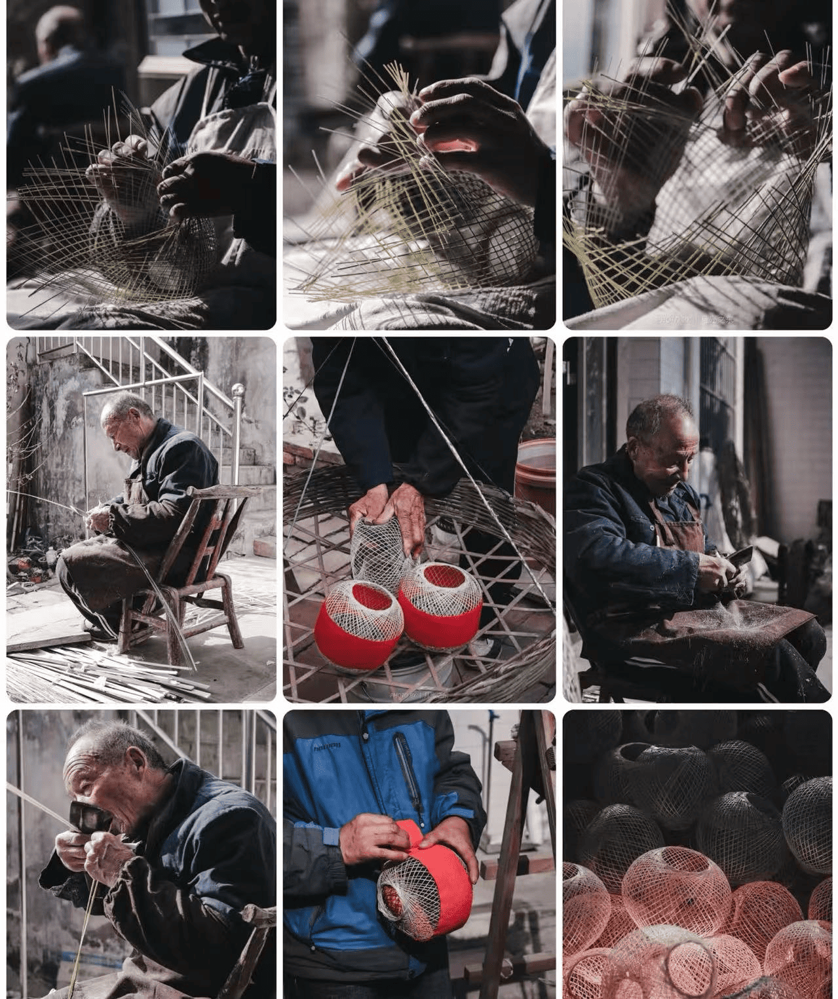

白鹿原竹篾灯笼
|  |
直播介绍在时光长河的幽深处，白鹿原竹篾灯笼静静闪耀，三百余载岁月流转，它宛如一颗璀璨的文化明珠，永不蒙尘。每一根竹篾，都精心遴选，经匠人巧手破竹、划蔑，编织出岁月的经纬。那细腻的纹理，恰似白鹿原上的阡陌纵横，写满故事与传承。糊纸、烘烤，一道道工序，凝聚着先辈的智慧与匠心，赋予灯笼坚韧的灵魂。 “火轱辘”灯笼，似古老的时光轮盘，承载着往昔的记忆；小巧“星星灯”，宛如夜空中闪烁的精灵，俏皮又灵动；大气“唐风”灯笼，则仿若穿越千年的盛景，尽显古韵风华。 如今，这非遗技艺在时代浪潮中风雨飘摇，仅余数户人家坚守。让我们走进直播间，一同探寻白鹿原竹篾灯笼的深邃内涵，用目光与热情，守护这即将熄灭的文化烛火，让它再次焕发出耀眼光芒，照亮我们的文化归途。 |